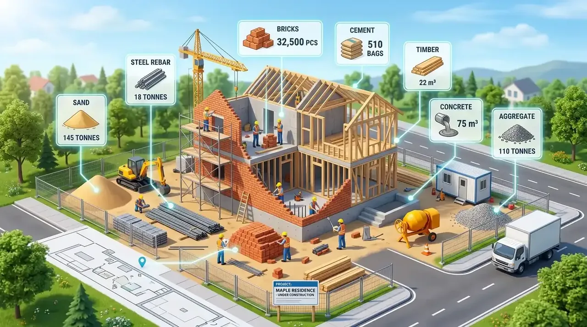

Apa Saja yang Diperiksa Saat Tim Melakukan Survei Renovasi?
Pemeriksaan lapangan mencakup evaluasi integritas pondasi, kelembapan dinding, kekuatan kuda-kuda atap, serta tata letak jaringan mekanikal elektrikal.
Survei renovasi bukan sekadar mengukur panjang dan lebar ruangan, melainkan audit teknis menyeluruh terhadap kesehatan bangunan. Mengacu pada data statistik Asosiasi Kontraktor Indonesia (AKI) periode 2025/2026, sekitar 54,2% pembengkakan biaya renovasi (cost overrun) dipicu oleh kerusakan struktural tersembunyi yang baru terdeteksi setelah proses pembongkaran dimulai.
Saat tim insinyur Kontraktor Bangunan tiba di lokasi Anda, inspeksi dilakukan dengan standar checklist ketat:
- Struktur Penahan Beban: Memeriksa retak geser (shear crack) pada dinding, lendutan balok beton, serta kondisi penurunan tanah pada pondasi tapak.
- Kondisi Atap & Talang: Mengevaluasi korosi rangka baja ringan atau lapuknya kayu kaso, kemiringan talang air beton, serta posisi titik rawan bocor.
- Audit Utilitas (MEP): Meneliti kapasitas panel listrik utama, jalur kabel yang usang, tekanan air bersih, serta elevasi kemiringan pipa pembuangan air kotor menuju septic tank.
- Tingkat Kelembapan Substrat: Menggunakan alat digital moisture meter untuk mengidentifikasi rembesan kapiler (rising damp) pada dinding lantai satu.
- Pertahankan Posisi Basah (Wet Areas): Hindari memindahkan posisi kamar mandi dan dapur ke sudut yang terlalu jauh karena akan menambah biaya pembongkaran lantai dan instalasi pipa baru hingga 30%.
- Metode Overlay Keramik: Jika lantai lama masih rata dan kokoh, pasang keramik atau lantai vinyl SPC baru di atas keramik lama menggunakan semen perekat khusus tanpa perlu membongkar lantai lama.
- Atasi Kebocoran Terlebih Dahulu: Jangan mengecat ulang plafon atau dinding yang bernoda sebelum titik kebocoran genteng dan dak talang diatasi tuntas.
Mengapa Estimasi Renovasi Tanpa Survei Lapangan Sangat Berisiko?
Estimasi tanpa survei menimbulkan risiko selisih volume pekerjaan, salah penentuan metode kerja, dan munculnya biaya tambahan di tengah proyek.
Banyak pemilik rumah tergoda oleh perkiraan harga "tembak" per meter persegi yang ditawarkan secara daring tanpa melihat kondisi fisik bangunan. Padahal, dua rumah bertipe sama persis dapat memiliki biaya renovasi yang terpaut hingga 40% bergantung pada kekuatan struktur lama yang masih bisa dipertahankan.
Tanpa survei langsung, kontraktor tidak dapat mengetahui apakah dinding yang akan dibongkar merupakan dinding partisi biasa atau dinding struktural pemikul beban (load-bearing wall). Kesalahan dalam membongkar dinding struktural tanpa perkuatan balok baja dapat membahayakan keselamatan seluruh penghuni rumah.
Tabel Komparasi Survei Mandiri vs Layanan Survei Kontraktor Bangunan
Layanan survei resmi Kontraktor Bangunan memberikan kepastian teknis dan rincian harga transparan tanpa komitmen biaya di muka.
| Aspek Penilaian | Survei Mandiri / Tukang Konvensional | Layanan Survei Kontraktor Bangunan |
|---|---|---|
| Biaya Kunjungan Survei | Dikenakan ongkos jalan Rp 200rb – Rp 500rb | 100% Gratis Tanpa Syarat Pembayaran |
| Peralatan Diagnostik | Hanya meteran pita manual biasa | Laser meter, moisture detector, levelling optic |
| Bentuk Estimasi Biaya | Catatan tulisan tangan gelondongan tanpa rincian | Dokumen RAB digital formal (itemized breakdown) |
| Kecepatan Penerbitan RAB | Butuh 5 – 10 hari kerja atau sering tertunda | Cepat & Langsung Jadi (1x24 hingga 2x24 Jam) |
| Konsultasi Desain & Layout | Tidak ada masukan arsitektur fungsional | Disertai rekomendasi optimasi ruang & pencahayaan |
| Kepastian Kontrak & Jadwal | Kesepakatan lisan rawan sengketa | Kontrak resmi SPK + Curva-S Time Schedule |

Konsultasi rincian Rencana Anggaran Biaya (RAB) renovasi per item pekerjaan bersama konsultan perencana.
Bagaimana Alur Booking Survei Hingga RAB Langsung Jadi?
Alur layanan berlangsung simpel melalui registrasi jadwal via WhatsApp, kunjungan inspeksi teknisi, hingga penerbitan dokumen RAB lengkap.
Proses pemesanan jadwal survei dirancang praktis agar tidak menyita waktu berharga Anda:
- Langkah 1 - Booking Jadwal: Hubungi customer care kami melalui WhatsApp, tentukan alamat lokasi properti dan waktu luang yang paling nyaman bagi Anda (tersedia jadwal weekdays maupun weekend).
- Langkah 2 - Kunjungan Lapangan: Tim estimator dan arsitek kami hadir tepat waktu, melakukan pengukuran dimensi ruangan, mengecek elevasi, dan mendiskusikan kebutuhan renovasi Anda secara mendalam.
- Langkah 3 - Pembuatan Konsep & Estimasi Cepat: Data hasil pengukuran diolah ke dalam sistem kalkulasi terpadu untuk menyusun rincian kebutuhan material, upah kerja, dan durasi pengerjaan.
- Langkah 4 - Presentasi RAB & Penyesuaian: Dokumen RAB transparan diserahkan kepada Anda. Anda bebas meminta penyesuaian (adjustment) spesifikasi material agar pas dengan alokasi bujet yang disiapkan.
Tips Efisiensi Anggaran Renovasi Berdasarkan Hasil Inspeksi Teknis
Efisiensi anggaran dicapai dengan memprioritaskan perbaikan struktur esensial sebelum menyentuh pekerjaan estetika atau dekorasi interior.
Berdasarkan hasil temuan survei di lapangan, terapkan langkah-langkah strategis berikut:
- Alokasikan Dana Darurat (Contingency Cost): Siapkan dana cadangan 10% dari total nilai proyek untuk mengantisipasi temuan kerusakan tersembunyi seperti rayap pada plafon atau pipa mampet di dalam dinding.
- Gunakan Material Ramah Lingkungan & Awet: Pilih rangka plafon hollow galvanis dan baja ringan anti karat yang memiliki ketahanan puluhan tahun dibanding kayu kaso rentan lapuk.
- Tetapkan Rencana Kerja Tertulis: Pastikan seluruh daftar perubahan spesifikasi tertuang dalam dokumen addendum SPK resmi untuk menghindari perselisihan biaya akhir.
Pertanyaan yang Sering Diajukan (FAQ)
Kesimpulan Praktis
Survei renovasi profesional merupakan langkah awal paling bijak untuk menjamin proyek renovasi Anda berjalan lancar, aman, dan bebas dari pembengkakan biaya. Mengambil keputusan renovasi tanpa data teknis lapangan berisiko menimbulkan masalah struktural dan kerugian finansial yang besar.
Dengan memanfaatkan program booking survei gratis dari Kontraktor Bangunan, Anda memperoleh gambaran menyeluruh mengenai kondisi fisik bangunan serta kepastian biaya yang transparan dan dapat disesuaikan dengan kebutuhan Anda.